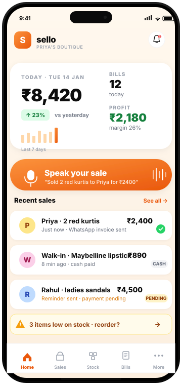

The why
Walk into any small shop in India and you'll see the same three tools running the business: a thick notebook with the day's sales, an Excel sheet nobody opens after Friday, and a WhatsApp chat that's three years deep with customer payment reminders. Together they sort of work — until the owner wants to know which products actually make money, or which customer hasn't paid in two months.
The honest answer was always: nobody knows. Existing software either felt like enterprise ERP cosplay — too many tabs, too much English, too desktop-first — or it stopped at "make a bill" and ignored everything else. So I built Sello. One app, on the phone that's already in their pocket, that talks the way they actually run the shop.
What Sello does
Sello replaces the notebook, the Excel sheet, and most of the WhatsApp chaos. The shop owner speaks or types a sale in plain English or Hindi — "sold 2 red kurtis to Priya for ₹2400" — and Sello does the rest: stock updates automatically, profit is calculated on every bill, a GST-compliant invoice goes out on WhatsApp, and the payment reminder is queued for next week. The owner gets to do what they're good at: sell.
Speak your sales
Voice or text — "Sold 2 red kurtis to Priya for ₹2400" — and the entry's done in 5 seconds. AI handles the messy human input so shop owners never have to think in spreadsheet terms.
Inventory that tracks itself
Every sale updates stock automatically — sizes, colours, photos and all. Low-stock alerts fire before you run out, so you never lose a sale to a missing SKU.
WhatsApp does the work
GST-compliant invoices and payment reminders go out on the channel your customers already use. One tap, sent. No PDF downloads, no email chains.
Who it's for
Boutiques, garment shops, footwear, cosmetics, gift shops, home sellers — small Indian retailers running on phones, juggling 50–500 SKUs, and chasing payments at the end of every month. Free to start, no credit card, works on any phone.
Under the hood
Built mobile-first because every customer is on a phone, not a laptop. AI does the heavy lifting on the messy parts — partial product names, mixed languages, voice memos — so the shop owner never has to think in fields and forms. The stack is intentionally boring where it can be (so it's reliable for someone whose business depends on it) and intentionally interesting where it has to be (the AI input layer, the WhatsApp Business API integration, the GST invoice generator).
See it in action
Sello lives where the shop already does — on the phone in the owner's apron pocket. Speak a sale, watch stock update, send the invoice on WhatsApp. The whole loop is seconds long.

Why this matters for your business
Sello started as one frustration — watching shop owners do the work twice, once in real life and once in a notebook — and became a working business with paying users. The muscle that bridges those two states (from "this would be useful" to "people are using it daily") is what I bring into client engagements.
It's a different muscle from pure advisory work. It's the difference between recommending a system and shipping one. If you've got a workflow inside your business that feels like Sello's "notebook + Excel + WhatsApp" — too many tools, no single source of truth, everyone in their own version of the spreadsheet — that's exactly the shape of problem I like to solve.